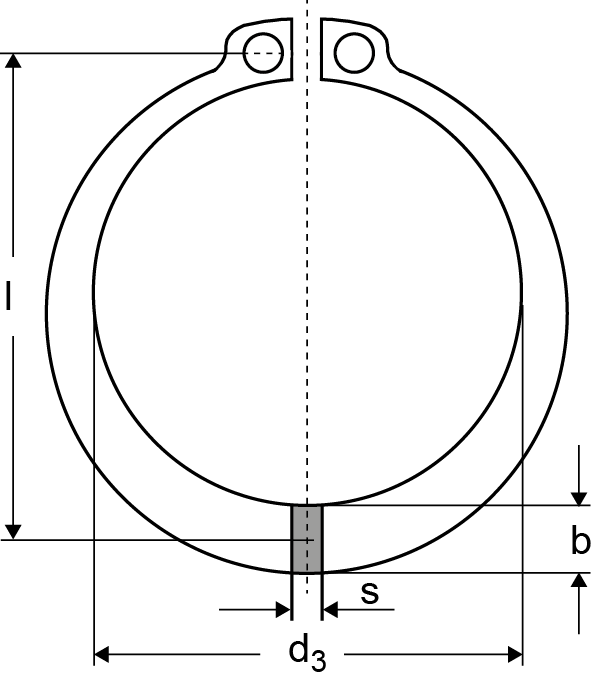
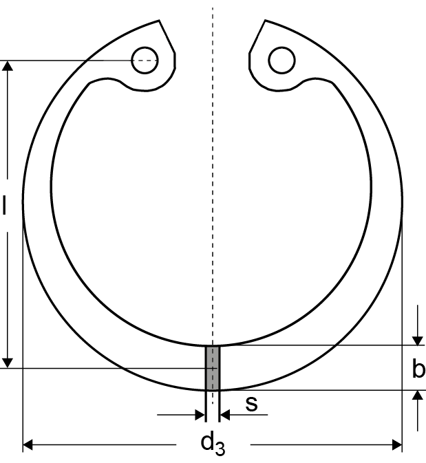
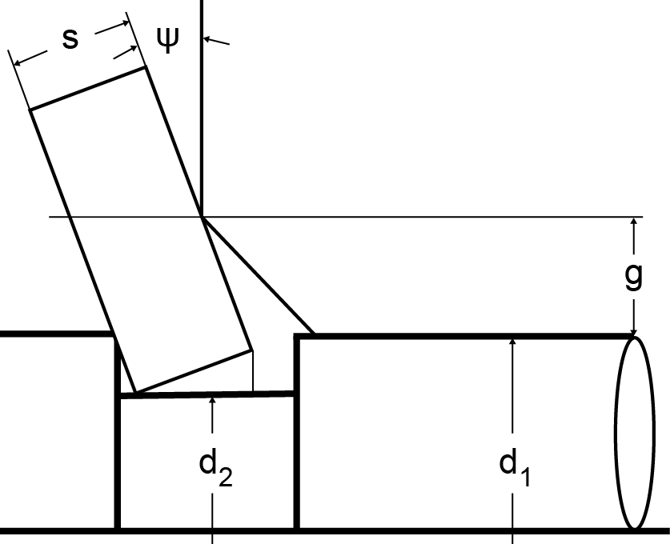

|
|
|


基本数据
在“基本数据”选项卡中输入以下数据：
- "几何"组
- 轴环/孔环：指定计算是针对轴环还是孔环
- 保持环/卡簧：指定计算是针对保持环还是卡簧
- d1: 公称长度，轴环的轴径或孔环的孔径
- d2: 沟槽直径
- d3: 轴上卡环的内径或孔中卡环的外径（无应力状态）
- b: 卡环的最大径向宽度
- 尺寸 l：（见图43.1）
- s: 环的厚度
- ψ: 卡环的允许凹状变形角（见图43.2）
- g: 斜面或转角距离/半径


图43.1：轴环（a）和孔环（b）的几何结构

图43.2：几何术语s、ψ、g的定义。
- "工况"组
- q: 载荷因子，考虑轴肩长度比的影响
- μ: 环面与轴/孔面之间的摩擦系数
- "材料"组
- 在此组中您可以定义环的材料以及轴/孔的材料。功能与“连接”模块组中其余的 KISSsoft 模块类似。
English Original
Basic data
Input the following data in the Basic data tab:
- "Geometry" group
- Shaft/bore ring: specifies whether the calculation is to be performed for a shaft or for a bore ring
- Retaining ring/circlip: specifies whether the calculation is to be performed for a retaining ring or a circlip
- d1: nominal length, the shaft diameter for a shaft ring, or the bore diameter for a bore ring
- d2: groove diameter
- d3: inside diameter of the snap ring for shafts or external diameter of the snap ring for bores in the unstressed state
- b: the maximum radial width of the snap ring
- Dimension l: (see Figure 43.1)
- s: the thickness of the ring
- ψ: permissible dishing angle of the snap ring (see Figure 43.2)
- g: angled or corner distance/radius
Figure 43.1: Geometry of shaft ring (a) and bore ring (b)
Figure 43.2: Definition of geometry terms s, ψ, g.
- "Operating data" group
- q: the load factor, taking into consideration the effect of the shoulder length ratio
- μ: the coefficient of friction between the ring surface and the shaft/bore surface
- "Materials" group
- In this group you can define the material of the ring and shaft/bore. The functionality is similar to the rest of the KISSsoft modules in the "Connections" module group.